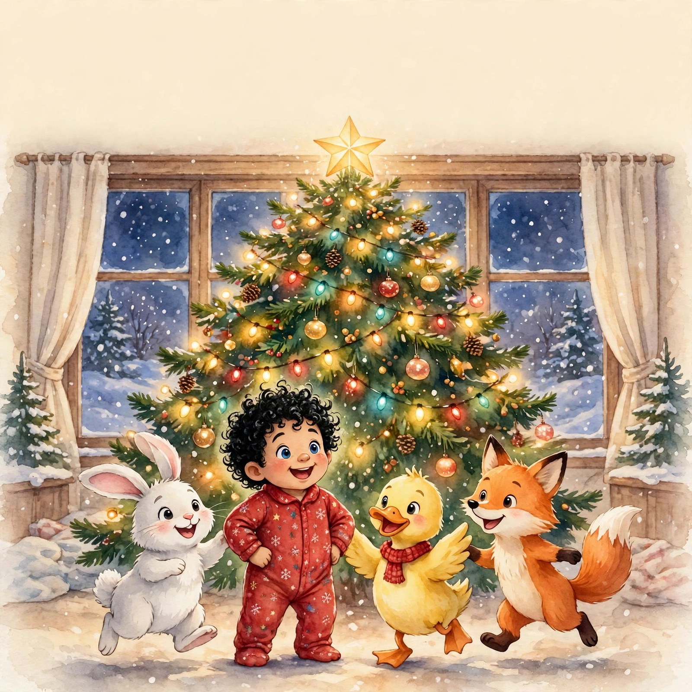

0:00
0:00
Prêt à écouter 🎧
📖 Page à lire ensemble — sans audio
Page 1 / 15
Le premier livre de Noël de Bébé Adam, offert gratuitement : lisez-le page par page et écoutez la narration avec ses effets sonores — les clochettes, la neige qui tombe et la magie de Noël. Une histoire toute douce, pensée pour les tout-petits.

Prêt à écouter 🎧
📖 Page à lire ensemble — sans audio
Envie d'autres histoires ? Découvrez tous les livres d'Adam et ses amis et les autres histoires gratuites.